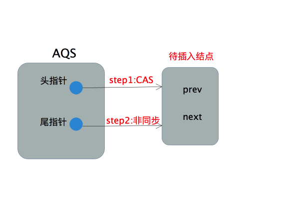
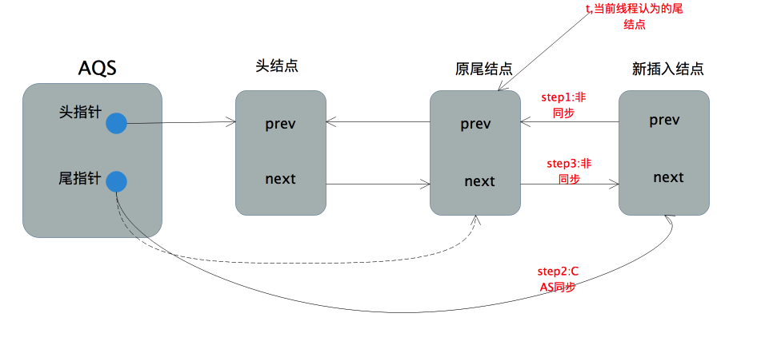
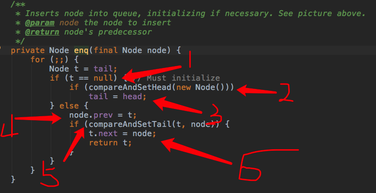
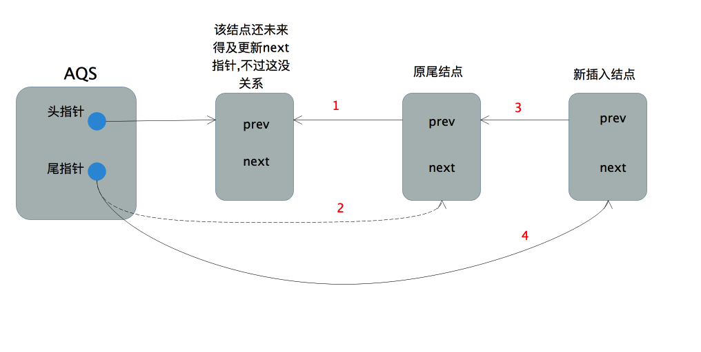
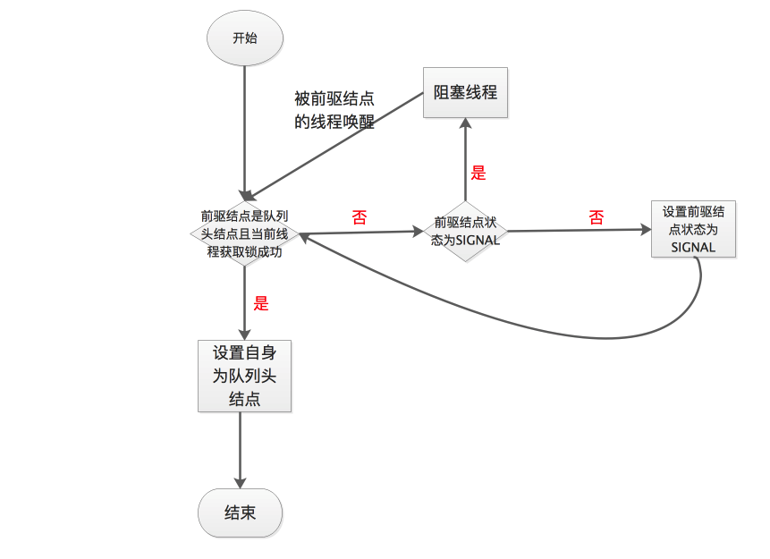

我们再来看 ReentrantLock，加锁流程从 lock.lock() 开始
1 | public void lock() { |
进入该源码,正确找到sycn的实现类后可以看到真正有内容的入口方法。
1、加锁流程真正意义上的入口
因为这里讲解的是非公平锁，所以来看 NonfairSync 类：
1 | /** |
首先尝试快速获取锁,以cas的方式将state的值更新为1,只有当state的原值为0时更新才能成功,因为state在ReentrantLock的语境下等同于锁被线程重入的次数,这意味着只有当前锁未被任何线程持有时该动作才会返回成功。若获取锁成功,则将当前线程标记为持有锁的线程,然后整个加锁流程就结束了。
若获取锁失败,则执行acquire方法，acquire 方法是AQS中的方法。
自我理解：一上来首先通过 CAS 来进行获取锁，如果 CAS 原子操作成功，则将当前线程标记为持有锁的线程。；如果CAS 失败，则调用 acquire 方法继续进行获取锁。
如果一上来就获取锁成功，是不需要创建Node的。
1 | /** |
该方法主要的逻辑都在 if 判断条件中,这里面有3个重要的方法tryAcquire()，addWaiter()和acquireQueued()，这三个方法中分别封装了加锁流程中的主要处理逻辑，理解了这三个方法到底做了哪些事情，整个加锁流程就清晰了。
2 尝试获取锁的通用方法:tryAcquire()
tryAcquire是AQS中定义的钩子方法,如下所示
1 | protected boolean tryAcquire(int arg) { |
该方法默认会抛出异常,强制同步组件通过扩展AQS来实现同步功能的时候必须重写该方法,ReentrantLock在公平和非公平模式下对此有不同实现,非公平模式的实现如下：
1 | protected final boolean tryAcquire(int acquires) { |
底层调用了nonfairTryAcquire()
从方法名上我们就可以知道这是非公平模式下尝试获取锁的方法,具体方法实现如下
1 | /** |
这是非公平模式下获取锁的通用方法。它囊括了当前线程在尝试获取锁时的所有可能情况：
- 当前锁未被任何线程持有(state=0),则以cas方式获取锁,若获取成功则设置exclusiveOwnerThread为当前线程,然后返回成功的结果；若cas失败,说明在得到state=0和cas获取锁之间有其他线程已经获取了锁,返回失败结果。
- 若锁已经被当前线程获取(state>0,exclusiveOwnerThread为当前线程),则将锁的重入次数加1(state+1),然后返回成功结果。因为该线程之前已经获得了锁,所以这个累加操作不用同步。
- 若当前锁已经被其他线程持有(state>0,exclusiveOwnerThread不为当前线程),则直接返回失败结果
因为我们 用state来统计锁被线程重入的次数, 所以当前线程尝试获取锁的操作是否成功可以简化为:state值是否成功累加1,是则尝试获取锁成功,否则尝试获取锁失败。
其实这里还可以思考一个问题:nonfairTryAcquire已经实现了一个囊括所有可能情况的尝试获取锁的方式,为何在刚进入lock方法时还要通过compareAndSetState(0, 1)去获取锁,毕竟后者只有在锁未被任何线程持有时才能执行成功,我们完全可以把compareAndSetState(0, 1)去掉,对最后的结果不会有任何影响。这种在进行通用逻辑处理之前针对某些特殊情况提前进行处理的方式在后面还会看到,一个直观的想法就是它能提升性能，而代价是牺牲一定的代码简洁性。
退回到上层的acquire方法,
1 | public final void acquire(int arg) { |
tryAcquire(arg)返回成功,则说明当前线程成功获取了锁(第一次获取或者重入),由取反和&&可知,整个流程到这结束，只有当前线程获取锁失败才会执行后面的判断。先来看addWaiter(Node.EXCLUSIVE)
部分,这部分代码描述了当线程获取锁失败时如何安全的加入同步等待队列。这部分代码可以说是整个加锁流程源码的精华,充分体现了并发编程的艺术性。
3 获取锁失败的线程如何安全的加入同步队列:addWaiter()
####3.1 代码解读
添加节点到队列中
这部分逻辑在addWaiter()方法中
1 | /** |
首先创建了一个新节点,并将当前线程实例封装在其内部,之后我们直接看enq(node)方法就可以了,中间这部分逻辑在enq(node)中都有,之所以加上这部分“重复代码”和尝试获取锁时的“重复代码”一样,对某些特殊情况进行提前处理,牺牲一定的代码可读性换取性能提升。
1 | /** |
这里有两个CAS操作:
compareAndSetHead(new Node()),CAS方式更新head指针,仅当原值为null时更新成功
1 | /** |
compareAndSetTail(t, node),CAS方式更新tial指针,仅当原值为t时更新成功
1 | /** |
外层的for循环保证了所有获取锁失败的线程经过失败重试后最后都能加入同步队列。因为AQS的同步队列是不带哨兵结点的,故当队列为空时要进行特殊处理,这部分在if分句中。注意当前线程所在的结点不能直接插入空队列,因为阻塞的线程是由前驱结点进行唤醒的。故先要插入一个结点作为队列首元素,当锁释放时由它来唤醒后面被阻塞的线程,从逻辑上这个队列首元素也可以表示当前正获取锁的线程,虽然并不一定真实持有其线程实例。
首先通过new Node()创建一个空结点，然后以CAS方式让头指针指向该结点 (该结点并非当前线程所在的结点)，若该操作成功,则将尾指针也指向该结点。这部分的操作流程可以用下图表示

当队列不为空,则执行通用的入队逻辑,这部分在else分句中
1 | else { |
首先当前线程所在的结点的前向指针pre指向当前线程认为的尾结点,源码中用t表示。然后以CAS的方式将尾指针指向当前结点,该操作仅当tail=t,即尾指针在进行CAS前未改变时成功。若CAS执行成功,则将原尾结点的后向指针next指向新的尾结点。整个过程如下图所示

####3.2 多思考一步：
整个入队的过程并不复杂,是典型的CAS加失败重试的乐观锁策略。其中只有更新头指针和更新尾指针这两步进行了CAS同步,可以预见高并发场景下性能是非常好的。但是本着质疑精神我们不禁会思考下这么做真的线程安全吗？

- 队列为空的情况:
因为队列为空,故head=tail=null,假设线程执行2成功,则在其执行3之前,因为tail=null,其他进入该方法的线程因为head不为null将在2处不停的失败,所以3即使没有同步也不会有线程安全问题。 - 队列不为空的情况:
假设线程执行5成功,则此时4的操作必然也是正确的(当前结点的prev指针确实指向了队列尾结点,换句话说tail指针没有改变,如若不然5必然执行失败),又因为4执行成功,当前节点在队列中的次序已经确定了,所以6何时执行对线程安全不会有任何影响,比如下面这种情况

为了确保真的理解了它,可以思考这个问题:把enq方法图中的4放到5之后,整个入队的过程还线程安全吗？
到这为止,获取锁失败的线程加入同步队列的逻辑就结束了。但是线程加入同步队列后会做什么我们并不清楚,这部分在acquireQueued方法中
####3.3 几个疑问
######有一个地方比较特殊：
在上方的 enq 方法中，我们假如A线程是首次获取锁的线程，当A线程首先获取锁时，此时并没有创建头结点。在A线程未释放锁，当第二条B线程再来获取锁时需要添加进队列，发现队列为空，就创建了一个不包含 Thread 的 空节点 作为 head，然后将自己追加到这个节点之后作为后继节点。
######为什么要创建一个空的节点作为头结点？而不是直接将当前线程节点作为头结点呢？
- A线程获取锁后，无需创建节点。对A而言，它是第一个成功获取到锁的，就算创建了头结点，在释放的时候头结点也会消失，可能考虑到节省一个Node的创建成本
- 为什么第二条线程加入队列时，要创建一个空节点作为 head？
个人猜测是这样的：解锁过程是获取头结点，然后释放头结点的后继节点。因为当时第一条线程获取锁后并没有创建节点（当然也无需创建节点），如果第二条线程进入队列后为头结点，那么在第一条线程释放的时候，刚好绕过了第二条线程。当然这个在解锁的时候才会明白。
4、线程加入同步队列后会做什么:acquireQueued()
####4.1 源码解读
加入队列后处理
先看acquireQueued方法的源码
1 | /** |
这段代码主要的内容都在for循环中,这是一个死循环,主要有两个if分句构成。第一个if分句中,当前线程首先会判断前驱结点是否是头结点,如果是则尝试获取锁,获取锁成功则会设置当前结点为头结点(更新头指针)。为什么必须前驱结点为头结点才尝试去获取锁？因为头结点表示当前正占有锁的线程,正常情况下该线程释放锁后会通知后面结点中阻塞的线程,阻塞线程被唤醒后去获取锁,这是我们希望看到的。然而还有一种情况,就是前驱结点取消了等待,此时当前线程也会被唤醒,这时候就不应该去获取锁,而是往前回溯一直找到一个没有取消等待的结点,然后将自身连接在它后面。一旦我们成功获取了锁并成功将自身设置为头结点,就会跳出for循环。否则就会执行第二个if分句:确保前驱结点的状态为SIGNAL,然后阻塞当前线程。
个人理解：这个for循环是自旋的另一部分，走进这个 for 循环的线程，将不断地在 “尝试获取锁” -> “更新前驱节点状态” -> “阻塞当前线程” -> “当前线程被唤醒” -> “尝试获取锁” 的过程中轮回。一直到成功获取锁，才会走出这个轮回。
从“if (p == head && tryAcquire(arg)) ”这行代码可以看出：
- head的意义是正持有锁的节点。从代码中得知，如果前驱结点是头结点，并且当前节点获取锁失败了，是不会变更 head 的，而是会判断是否需要去阻塞；假如当前节点获取锁成功了，才会将当前节点更新成 head，并且释放前驱结点的所有引用，因为前驱结点已经执行完毕并释放锁了，无需再在队列中存在了
- 只有在前驱结点是头结点的时候，当前节点才会去尝试获取锁，否则直接阻塞。此过程保证了队列的公平性，排队去尝试获取锁。
是否需要阻塞当前线程
先来看shouldParkAfterFailedAcquire(p, node)，从方法名上我们可以大概猜出这是判断是否要阻塞当前线程的,方法内容如下
1 | /** |
可以看到针对前驱结点pred的状态会进行不同的处理
- pred状态为SIGNAL,则返回true,表示要阻塞当前线程。
- pred状态为CANCELLED,则一直往队列头部回溯直到找到一个状态不为CANCELLED的结点,将当前节点node挂在这个结点的后面。
- pred的状态为初始化状态,此时通过compareAndSetWaitStatus(pred, ws, Node.SIGNAL)方法将pred的状态改为SIGNAL。
其实这个方法的含义很简单,就是确保当前结点的前驱结点的状态为SIGNAL,SIGNAL意味着线程释放锁后会唤醒后面阻塞的线程。毕竟,只有确保能够被唤醒，当前线程才能放心的阻塞。
但是要注意只有在前驱结点已经是SIGNAL状态后才会执行后面的方法立即阻塞,对应上面的第一种情况。其他两种情况则因为返回false而重新执行一遍for循环。这种延迟阻塞其实也是一种高并发场景下的优化,试想我如果在重新执行循环的时候成功获取了锁,是不是线程阻塞唤醒的开销就省了呢？
阻塞当前线程
最后我们来看看阻塞线程的方法parkAndCheckInterrupt
shouldParkAfterFailedAcquire返回true表示应该阻塞当前线程,则会执行parkAndCheckInterrupt方法,这个方法比较简单,底层调用了LockSupport来阻塞当前线程,源码如下:
1 | /** |
该方法内部通过调用LockSupport的park方法来阻塞当前线程,不清楚LockSupport的可以看看这里。
下面通过一张流程图来说明线程从加入同步队列到成功获取锁的过程

概括的说,线程在同步队列中会尝试获取锁,失败则被阻塞,被唤醒后会不停的重复这个过程,直到线程真正持有了锁,并将自身结点置于队列头部。
####4.2 几个疑问
######此方法修改的是前驱结点的状态，那当前节点的状态改不改？
改，但是是依靠它的后继节点去修改的。假如目前只有一个头结点在持有着锁，现在A线程加入了同步队列，发现头结点是 SIGNAL，则阻塞自己；后来B线程又加入了队列，发现 A 线程状态是 0，于是就将 A 的状态更新为 SIGNAL。以此类推。
5、加锁流程源码总结
ReentrantLock非公平模式下的加锁流程如下

如果有什么地方描述的错误或者缺失，请在下方留言，大家一起交流，一起学习，一起成长~
下一节：ReentrantLock （三） —— 非公平模式解锁流程